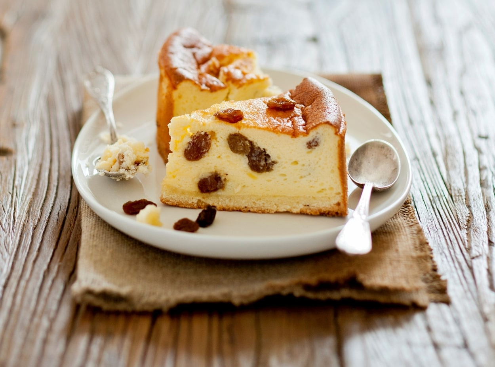

Bigos

Sernik is a delicious Polish-style cheesecake. There are many varieties and regional recipes, but what makes them all truly special is the cheese.
In this recipe, we’re making a classic Sernik on a shortcrust base. No distractions, no extra toppings. Just dreamy, creamy, decadent bliss.
Ingredients
FOR THE BASE:
- 2 cups (250 g) wholewheat flour (can be swapped for a regular, all-purpose)
- 2 egg yolks
- 1 stick (4 oz, 110 g) butter
- 2 tbsp powdered/icing sugar
- 1 tbsp sour cream, 18%
FOR THE CHEESE LAYER:
- 2.2 lb (1 kg) Farmer’s Cheese, full fat
- 3 egg yolks
- 5 egg whites
- 2.2 lb (1 kg) Farmer’s Cheese, full fat
- 1 cup (200 g) sugar
- 2 tsp vanilla extract
- 1 stick (4 oz, 110 g) butter
- 2 tbsp potato starch (optional)
- 2 tbsp candied orange peel, chopped
- 2 tbsp raisins (optional)
- 2 tsp powdered/icing sugar, to sprinkle on top
Instructions
- Take the ingredients (for the cheese layer only!) out of the fridge 2-3 hours before baking.
They should be at a room temperature.Grab a large bowl. Drop in all the shortcrust ingredients.
Chop the butter roughly with a knife. Knead until all the ingredients are combined and you can’t
They should be at a room temperature.Grab a large bowl. Drop in all the shortcrust ingredients.
feel any major lumps. Form a dough ball.Wrap the bowl with cling film and place in the fridge for
They should be at a room temperature.Grab a large bowl. Drop in all the shortcrust ingredients.
20-30 minutes.In the meantime, let’s make the cheese layer. Grind the farmer’s cheese with a tool
They should be at a room temperature.Grab a large bowl. Drop in all the shortcrust ingredients.
of your choice: meat grinder (smallest holes), potato ricer or a blender. When using a meat grinder,
They should be at a room temperature.Grab a large bowl. Drop in all the shortcrust ingredients.
grind the cheese at least 2 times. The mass should be smooth and lump-free. Set the cheese aside,
They should be at a room temperature.Grab a large bowl. Drop in all the shortcrust ingredients.
you’ll need it in a minute. Preheat the oven to 360°F (180°C). Line a round baking tin (I’ve used
They should be at a room temperature.Grab a large bowl. Drop in all the shortcrust ingredients.
10 inch / 25cm in diameter, with a loose base) with parchment paper. Grease the edges.
They should be at a room temperature.Grab a large bowl. Drop in all the shortcrust ingredients.
-
Remove the dough from the fridge. Roll it out to fit the baking tin. I just grab small chunks of dough
They should be at a room temperature.Grab a large bowl. Drop in all the shortcrust ingredients.
and line the pan by hand, pressing with my fingers as I go, until I have an even layer of pastry.
They should be at a room temperature.Grab a large bowl. Drop in all the shortcrust ingredients.
Bake for 15 minutes until lightly golden, then remove from the oven - but keep the oven on.
They should be at a room temperature.Grab a large bowl. Drop in all the shortcrust ingredients.
Grab a large bowl (sized at 2 quart / 2 litre should be enough). Add 1 cup (200 g) sugar, 2 teaspoons
of vanilla extract and 3 egg yolks and mix with an electric mixer for 3 minutes until combined.
-
Remove the dough from the fridge. Roll it out to fit the baking tin. I just grab small chunks of dough
They should be at a room temperature.Grab a large bowl. Drop in all the shortcrust ingredients.
and line the pan by hand, pressing with my fingers as I go, until I have an even layer of pastry.
They should be at a room temperature.Grab a large bowl. Drop in all the shortcrust ingredients.
Bake for 15 minutes until lightly golden, then remove from the oven - but keep the oven on.
They should be at a room temperature.Grab a large bowl. Drop in all the shortcrust ingredients.
Grab a large bowl (sized at 2 quart / 2 litre should be enough). Add 1 cup (200 g) sugar, 2 teaspoons
of vanilla extract and 3 egg yolks and mix with an electric mixer for 3 minutes until combined.